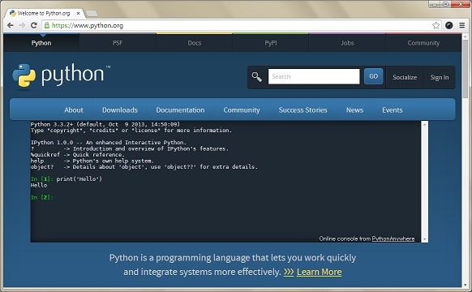

웹 브라우저에서 파이썬 사용하기
파이썬을 설치하지 않고도 사용해 볼 수 있습니다.
파이썬 공식 홈페이지의 첫 화면에 있는 노란색 Launch Interactive Shell 아이콘을 클릭해보세요. 아래 그림과 같은 파이썬 셸이 뜰 것입니다.
이곳에서 파이썬을 설치하지 않더라도 파이썬을 사용할 수 있습니다.
그렇다면 기초적인 사칙연산을 해보도록 하겠습니다.
덧셈
파이썬을 키고 다음과 같이 쳐보도록 하겠습니다.
>>> 1 + 2
3
이렇게 3이라는 값이 제대로 나오는 것을 확인할 수 있으실 겁니다.
뺄셈
그렇다면 뺄셈도 가능할까요?
>>> 4 - 1
3
직접 해보신다면 잘 작동한다는 것을 알 수 있으실겁니다.
곱셈
그렇다면 곱셈은 어떻게 할 수 있을까요?
곱셈은 기호 *를 이용합니다.
>>> 4 * 4
16
이렇게 말이죠
그럼 더 복잡한 것도 해볼까요?
>>> 12345678 * 3
37037034
역시 잘됩니다
참고로 제곱을 표현할 때는 **연산자를 사용합니다
>>> 2 ** 2
4
나눗셈
나누기 연산자는 무엇일까요?
네 / 입니다. 이 정도는 다들 알고 계실겁니다
>>> 10 / 2
5
그렇다면 나머지는 어떻게 구해야하죠?
%를 사용하면 됩니다
>>> 10 % 3
1
이렇게 1장에서는 파이썬의 어떻게 사용하는지 맛보기만 진행했습니다
2장부터 본격적인 파이썬을 해보도록 하겠습니다